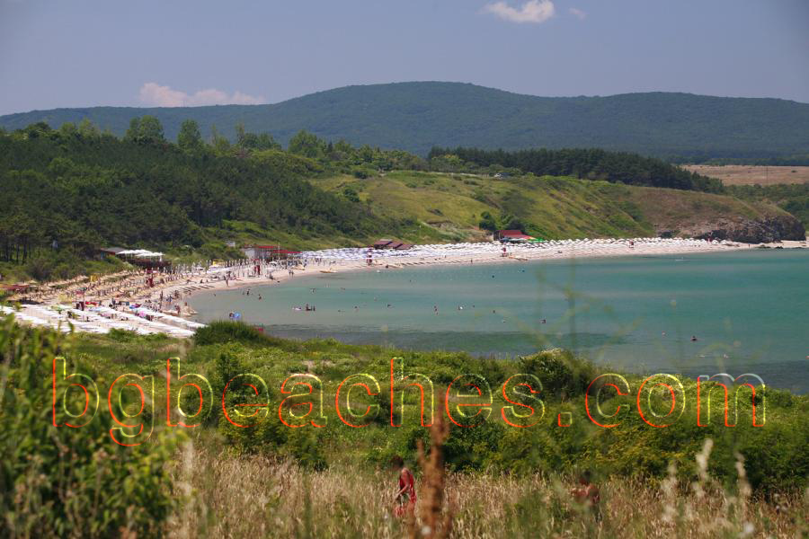

Плажа
За тази снимка
Тази снимка документира плажната зона в Ахтопол, показвайки конкретните условия и атмосфера на това място. Всяко крайбрежие в България има уникален характер и това изображение помага на посетителите да разберат какво могат да очакват от Ахтопол. Конкретно, снимката фокусира върху beach, което е характерна особеност на Ахтопол.
Разбиране на това, което виждате
Плажната зона, показана на това изображение, представлява типични условия в Ахтопол. При планиране на плажна почивка в България, визуална информация като тази помага на пътуващите да вземат информирани решения за това кои дестинации отговарят на техните предпочитания. Българското Черноморие се простира на 378 километра и предлага огромно разнообразие - от диви природни плажове до напълно развити курорти - което прави важно разбирането на характера на всяко място.
За Ахтопол
Ахтопол е най-южният град на българското Черноморие. Всяко място предлага уникални характеристики по отношение на качеството на плажа, водните условия, удобствата, нивото на претоварване и общата атмосфера. Крайбрежният туризъм в България предлага отлична стойност в сравнение със западноевропейските плажни дестинации, с летни температури достигащи 28-32°C (въздух) и температура на водата 22-25°C през пиковия сезон.
Информация за посещение
Какво прави българските плажове специални
Българското Черноморие съчетава няколко ключови предимства: топли летни води, перфектни за плуване, обикновено фин пясъчен плаж, сравнително ненатоварени условия (извън големите курорти), отлична стойност за парите, разнообразни опции от дива природа до развита инфраструктура, богата културна история и гостоприемство на местните хора.